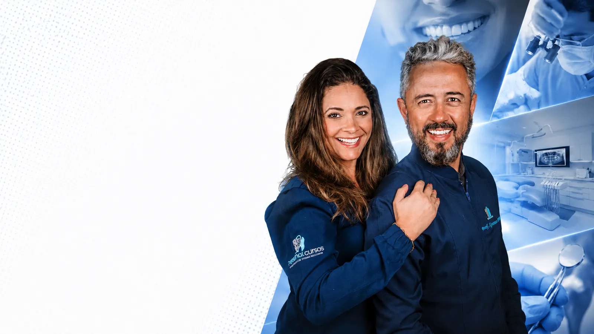
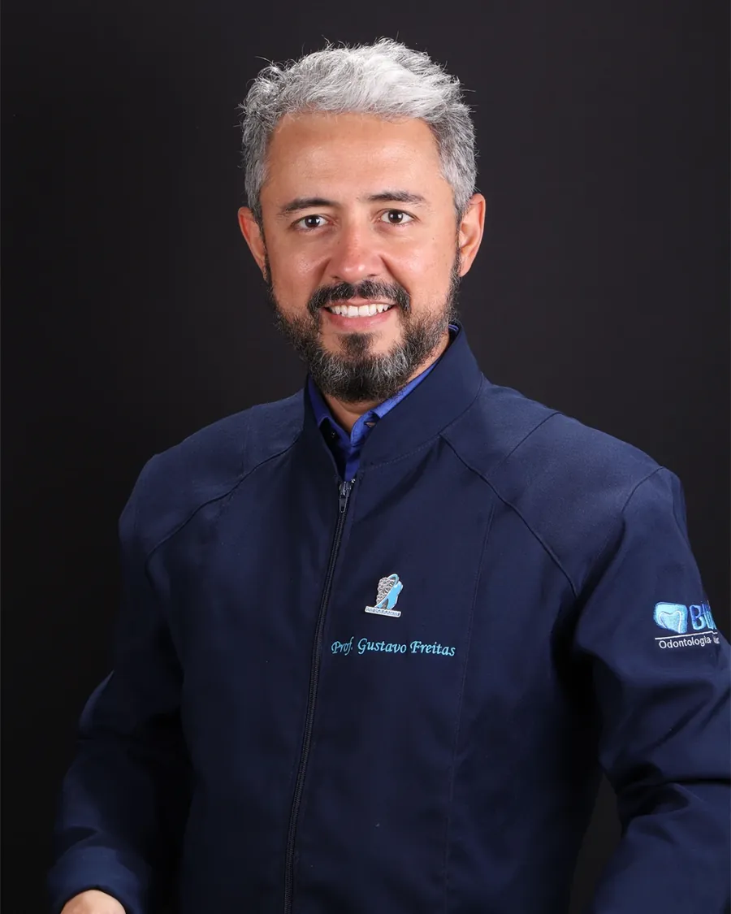
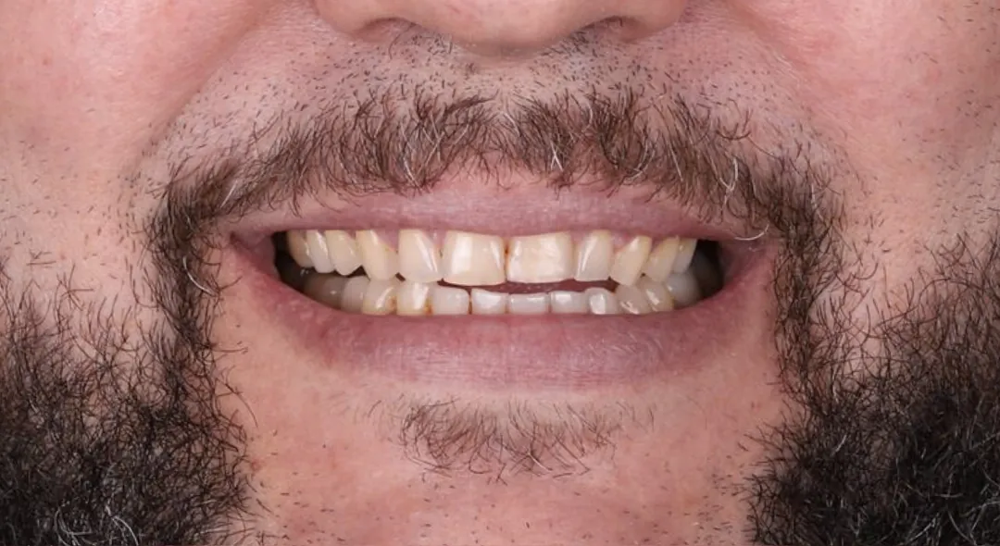
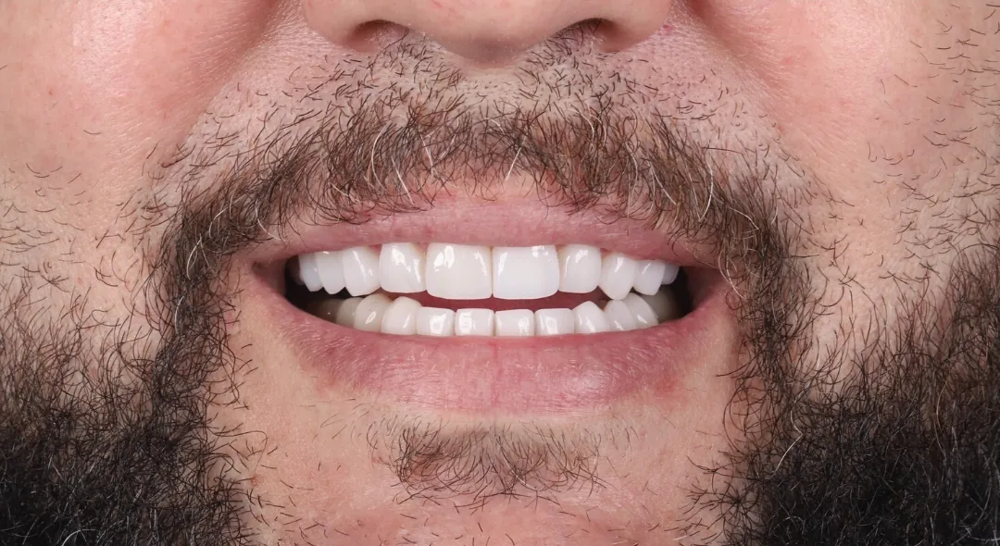

01

Lentes de contato dental Salvador
Seu sorriso, no seu melhor.
Lentes de contato dental com naturalidade. Um resultado que continua sendo o seu.
- Atendimento
- Seg–Sex · 9h às 18h
- Especialidade
- Lentes de contato
Por que a nossa clínica
Referência em estética do sorriso.
-
Experiência
Anos de sucesso em transformações de sorrisos.
-
Compromisso
Atendimento personalizado do início ao fim.
-
Responsabilidade
As mais avançadas técnicas e materiais.

Quem cuida de você
Dr. Gustavo Freitas
Especialista em lentes de contato · Professor · Referência em Salvador
Somos um grupo de profissionais altamente dedicados e apaixonados por redefinir sorrisos e elevar a autoestima dos nossos pacientes.
Nossa missão é ajudar cada indivíduo a conquistar não apenas um sorriso mais confiante e saudável, mas também a desfrutar de uma transformação completa em sua qualidade de vida.
Especializados em lentes de contato dental, possuímos anos de experiência e treinamento avançado que nos permitem oferecer um atendimento totalmente personalizado e de excelência.
Entendemos que cada sorriso é único, assim como cada paciente, e é por isso que investimos tempo para ouvir suas necessidades.
Nossa abordagem não se limita apenas à estética, mas também à saúde bucal. Sabemos que um sorriso bonito deve ser acompanhado de uma base sólida. Portanto, estamos comprometidos em fornecer soluções abrangentes que não só melhoram a aparência do seu sorriso, mas também promovam sua saúde oral.
Juntos, vamos criar a transformação do sorriso que você merece.
Resultados reais
Veja a diferença.
Antes e depois de pacientes atendidos pela nossa equipe. Arraste a linha para comparar.


Galeria de antes e depois
O que dizem os pacientes
Histórias de quem voltou a sorrir.
02
03
04
05
06
07
08
09
As lentes desgastam os dentes?
As técnicas atuais são minimamente invasivas e, em muitos casos, dispensam desgaste. Cada caso é avaliado individualmente.
O procedimento dói?
É confortável e conduzido com cuidado. A maior parte dos pacientes relata pouco ou nenhum desconforto.
Acumula sujeira ou causa mau hálito?
Não. Com o material adequado e a higiene orientada, as lentes mantêm o aspecto natural e saudável.
Fica realmente natural?
Sim — cada sorriso é desenhado sob medida para combinar com você e não parecer artificial.
Quanto tempo leva?
Depende do caso. Na avaliação apresentamos o passo a passo e o tempo estimado do seu tratamento.
Onde atendemos
Agende sua avaliação.
-
Endereço
Av. Antônio Carlos Magalhães, 1034
Abrir no Google Maps ↗
Ed. Pituba Parque Center · Sala 406-A
Itaigara · Salvador / BA -
WhatsApp
-
Instagram
-
Atendimento
Segunda a sexta · 9h às 18h
O primeiro passo é uma conversa
A odontologia pode ser diferente.
Vagas limitadas para atendimento personalizado.
Agendar avaliação